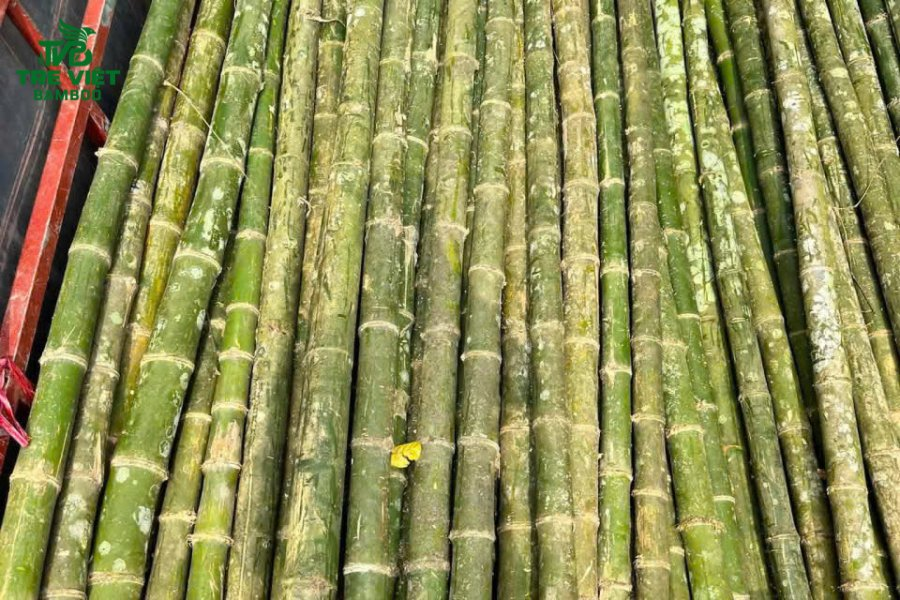
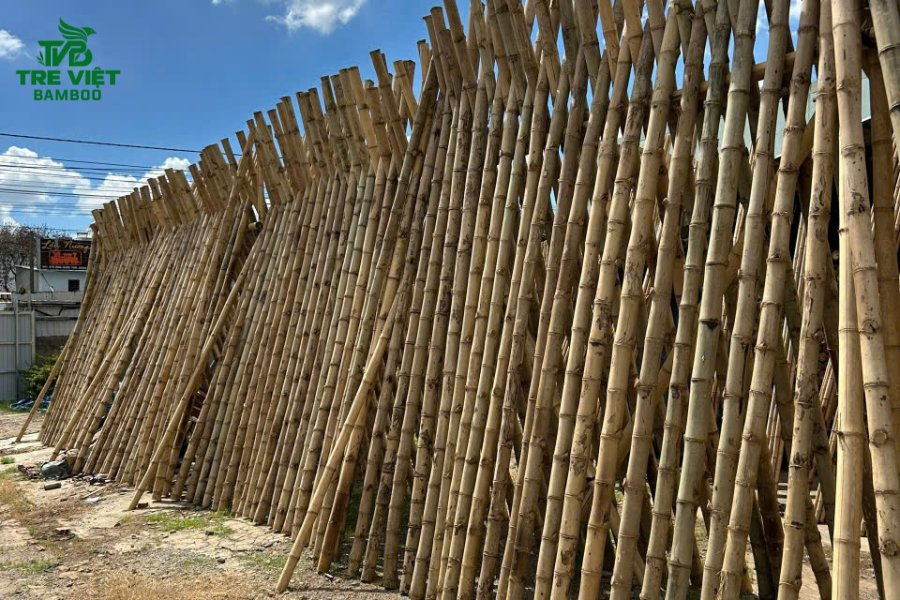
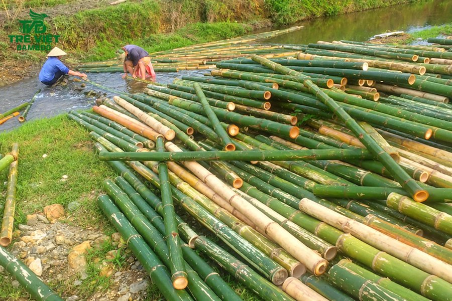
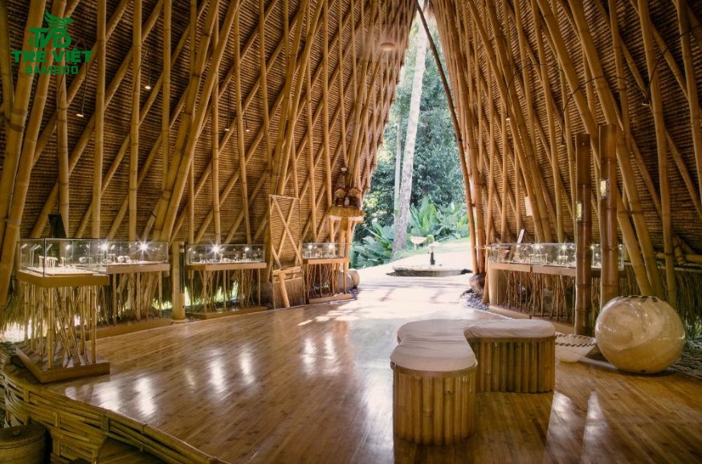

Tre trúc là vật liệu xây dựng tự nhiên, mang đậm nét văn hóa truyền thống, thân thiện với môi trường. Thế nhưng, một trong những rào cản lớn nhất khi sử dụng loại vật liệu này chính là nguy cơ bị côn trùng phá hoại. Vậy nên, để đảm bảo công trình luôn vững chắc và thẩm mỹ, khâu sơ chế nguyên liệu đóng vai trò quyết định. Trong bài viết này, Tre Việt Building sẽ tổng hợp chi tiết về nguyên nhân, tầm quan trọng và các phương pháp xử lý chống mối mọt cho tre chuẩn kỹ thuật. Cùng theo dõi ngay nhé.
Cây tre có bị mối mọt không?

Trong tự nhiên, cây tre tươi chứa một lượng lớn tinh bột, đường và độ ẩm cao. Đây cũng chính là nguồn thức ăn dồi dào, lý tưởng và vô cùng hấp dẫn đối với các loại côn trùng như mối, mọt, bọ cánh cứng.
Vì vậy, tre tươi sau khi khai thác nếu được đưa vào công trình sử dụng ngay mà không thông qua bất kỳ khâu xử lý nào thì chắc chắn 100% sẽ bị mối mọt gây hại tấn công. Chỉ sau một thời gian ngắn thôi, lớp lõi bên trong tre sẽ bị côn trùng ăn rỗng, sinh ra mùn cưa rơi vãi. Từ đây, thân tre sẽ dần yếu đi, giòn gãy, mất hoàn toàn khả năng chịu lực. Thậm chí ngay cả những cây tre già, đạt chuẩn 3 - 5 tuổi cũng không thể tránh khói nguy cơ này nếu như nhà thầu bỏ qua bước sơ chế kỹ lưỡng.
Lợi ích của việc xử lý chống mối mọt cho tre

Việc xử lý chống mối mọt cho tre trước khi đưa vào thi công, sản xuất được xem là quy trình mang tính bắt buộc để nhằm đảm bảo những yếu tố quan trọng sau đây:
Loại bỏ hoàn toàn nguồn thức ăn của côn trùng gây hại
Các phương pháp xử lý chống mối mọt cho tre sẽ làm phân hủy, triệt tiêu lượng tinh bột và đường có ở trong thân tre. Đồng thời, quy trình này cũng sẽ giúp làm giảm độ ẩm của thân tre xuống mức tối thiểu, khiến mối mọt không còn môi trường để sinh sôi và phát triển.
Bảo vệ kết cấu và tính an toàn cho công trình
Khi vật liệu tự nhiên không bị ăn rỗng ruột, các bó sợi tre sẽ giữ nguyên được sự liên kết chặt chẽ. Điều này giúp đảm bảo độ cứng cáp, khả năng chịu lực cũng như tính dẻo dai cho các hạng mục thi công (nhà tre, mái lá, vách ngăn, hàng rào).
Kéo dài tuổi thọ vật liệu
Trung bình mỗi một cây tre chưa qua xử lý chỉ sử dụng được từ 1 - 2 năm. Thế nhưng, nếu như được xử lý đúng chuẩn kỹ thuật thì tuổi thọ của một công trình tre trúc có thể kéo dài lên đến hàng chục năm, chống chịu tốt trước các tác động khắc nghiệt của thời tiết.
Giữ gìn giá trị thẩm mỹ
Việc sơ chế, xử lý chống mối mọt cho tre kỹ cũng sẽ giúp bề mặt của vật liệu tự nhiên luôn nhẵn bóng, giữ được màu sắc tự nhiên, không bị ố đen do nấm mốc và tuyệt đối không xảy ra tình trạng bột mọt rơi vãi làm mất vệ sinh không gian sống.
Tiết kiệm chi phí đầu tư
Xử lý vật liệu một lần ngay từ đầu sẽ giúp chủ đầu tư cắt giảm tối đa các chi phí phát sinh liên quan đến việc bảo trì, sửa chữa hoặc là thay mới vật liệu vì hư hỏng.
Một số phương pháp xử lý chống mối mọt cho tre hiệu quả

Trên thực tế, có rất nhiều cách để bảo vệ thân tre, từ những kinh nghiệm dân gian truyền thống cho đến các ứng dụng khoa học hiện đại. Sau đây là một số các phương pháp hiệu quả phổ biến mà bạn có thể tham khảo:
Các phương pháp xử lý chống mối mọt cho tre truyền thống
-
Ngâm bùn ao: Đây là phương pháp dân gian lâu đời nhất. Tre sau khi được khai thác sẽ mang đi ngâm chìm trong lớp bùn ao khoảng 3 - 6 tháng. Môi trường yếm khí ở dưới bùn đất sẽ giúp vi sinh vật phân hủy hết toàn bộ đường và tinh bột trong thân. Sau khi vớt lên, phơi khô, tre trở nên dẻo dai, khả năng chống mối mọt tuyệt đối, không bị nứt nẻ.
-
Ngâm nước: Phương pháp này cũng tương tự như ngâm bùn. Tre được dìm ngập trong ao, hồ hoặc bể chứa. Nước sẽ hòa tan, rửa trôi hết các chất dinh dưỡng ở bên trong.
-
Hun khói: Tre tươi được đặt lên gác bếp hay đưa vào các lò hun chuyên dụng. Ở nhiệt độ cao, nước ở trong thân tre sẽ bốc hơi, kết hợp cùng khói và bồ hóng bám vào sẽ tạo nên một lớp màng bảo vệ. Mùi khói giúp xua đuổi côn trùng, đồng thồ mang đến cho cây tre sắc nâu đen tự nhiên hay màu vàng ươm hoài cổ, sang trọng.
-
Luộc tre: Đối với phương pháp này, tre sẽ được mang đi luộc trong các bồn nước sôi. Ở nhiệt độ cao, các cấu trúc tinh bột sẽ bị làm chín và phá vỡ, các ấu trùng mọt đang ẩn nấp cũng sẽ bị tiêu diệt triệt để.
Các phương pháp xử lý chống mối mọt cho tre hiện đại
-
Sử dụng hóa chất và phế phẩm sinh học: Đây là phương pháp được áp dụng phổ biến, rộng rãi nhất trong sản xuất quy mô lớn nhờ tính hiệu quả và thời gian xử lý hết sức nhanh chóng. Với phương pháp này, tre sẽ được mang đi ngâm tẩm trong các thùng dung dịch chuyên dụng. Hóa chất thẩm thấu sâu vào bên trong các mao mạch, thay thế các lớp nhựa và tinh bột, tạo nên một lớp bảo vệ vững chắc từ trong ra ngoài. Đặc biệt, một điều mà khách hàng có thể an tâm, tin tưởng đó là các chế phẩm hiện nay đều được kiểm định an toàn với môi trường, sức khỏe con người.
-
Sơn phủ bảo vệ bề mặt: Sau khi tre được khai thác, làm khô, người thợ sẽ phủ thêm một lớp sơn PU, dầu bóng, vecni. Thực chất, lớp sơn này sẽ hoạt động giống như một “tấm khiên”, giúp ngăn ngừa độ ẩm xâm nhập, chống nấm mốc, tuyệt đối không cho mối mọt cơ hội cắn phá từ bên ngoài. Và đặc biệt, xét về tính thẩm mỹ, sơn phủ bề mặt sẽ giúp làm tăng độ bóng đẹp cho sản phẩm.
Tre Việt Building - Đơn vị cung cấp tre trúc uy tín, chất lượng

Để có thể tạo nên một không gian kiến trúc xanh, bền vững, việc tuyển chọn nguồn nguyên liệu đầu vào đã qua xử lý chuẩn kỹ thuật là yếu tố quan trọng hơn cả. Tre Việt Building tự hào là đơn vị chuyên cung cấp nguyên liệu tre trúc, tầm vông, lá guộc chất lượng và thi công các công trình kiến trúc sinh thái hàng đầu.
Chúng tôi cam kết mang đến cho khách hàng:
-
Nguồn nguyên liệu chọn lọc: 100% nguồn nguyên liệu tại Tre Việt Building được khai thác đúng mùa vụ, đủ tuổi (già đanh và cứng cáp) từ những vùng nguyên liệu tốt nhất.
-
Quy trình xử lý nghiêm ngặt, chuẩn kỹ thuật: Tất tần tật nguồn nguyên liệu tại Tre Việt Building đều được trải qua quy trình ngâm tẩm, xử lý chống mối mọt, nấm mốc bài bản trước khi xuất xưởng. Vì vậy chúng tôi đảm bảo vật liệu tự nhiên có độ bền bỉ vượt trội với thời gian.
-
Đa dạng chủng loại: Tại Tre Việt Building, chúng tôi cung cấp đầy đủ, đa dạng các loại tre, trúc, tầm vông, luồng với kích thước đồng đều, thân thẳng.
-
Dịch vụ thi công trọn gói: Tre Việt Building sở hữu đội ngũ thợ thi công lành nghề, giàu kinh nghiệm, am hiểu vật liệu, chuyên thi công ốp trúc trang trí, làm nhà tre, lợp mái lá guộc cho homestay, nhà hàng, resort, khu nghỉ dưỡng,...
Còn chần chờ gì nữa, hãy liên hệ đến Tre Việt Building ngay hôm nay để được tư vấn, hỗ trợ báo giá chi tiết nhất nhé.
CÔNG TY TRÁCH NHIỆM HỮU HẠN TRE VIỆT BUILDING
Địa chỉ: 917 Phạm Văn Đồng, Phường Linh Xuân, Thành phố Hồ Chí Minh
Nhà máy sản xuất: Phú Hợp B, Xã Phú Lâm, Đồng Nai.
Điện thoại – Zalo: 087.6915.999
Email: info@treviet.com.vn
treviet23@gmail.com